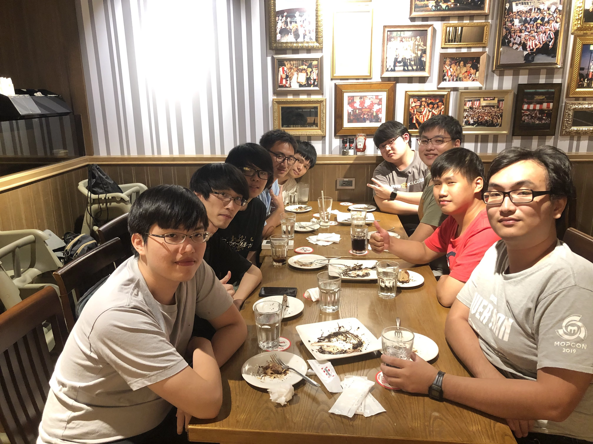

-
CCNS 109下 PIXNET 痞客邦企業參訪
- 2021
-
CCNS 109上 期末聚餐

-
CCNS 2020 畢業合照
-
CCNS 109上 烤肉聚餐
-
CCNS 108下 期末聚餐
-
CCNS 108下 LAN PARTY
- 2020
-
CCNS x AWS Educate
-
Machine Learning Crash Course

- 2019
-
107上學期 社團博覽大會
- 2018
-
Coin Cake出遊
-
CCNS 106下 Chatbot問答大賽頒獎

-
SITCON x CCNS x C4Labs 台南聚 #27
-
SITCON x CCNS x C4Labs 台南聚 #26
-
CCNS 105下 期末社聚
- 2017
-
SITCON x C4Labs x CCNS 台南聚 #25 暨投稿者小聚
-
CCNS 105下 中華電信公司枋山機房重地參訪

-
CCNS 105上 期初社大
- 2016
-
CCNS 104上 開源月系列講座
- 2015
-
CCNS 103上 社出遊
-
CCNS 103上 資訊月出遊
- 2014
-
CCNS 101下 期初社大
- 2012
-
CCNS 民國92年 聚會
- 2003
-
CCNS 民國88年 社辦
- 1999
-
CCNS 民國87年 硬體展
-
CCNS 民國87年
- 1998
-
CCNS 民國83年 演講合照
-
CCNS 民國83年 李建達 FreeBSD 演講
- 1994